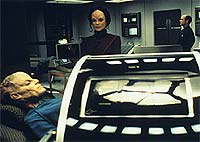
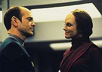
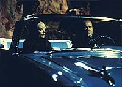
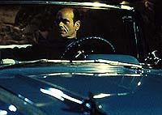

|
MANCHETE
DO EPISDIO
Episdio traz de volta os Vidiians para
induzir a paixo no Doutor hologrfico
Episdio
anterior | Prximo
episdio
Sinopse:
Data Estelar: 49504.3.
A tripulao da Voyager responde a um sinal de socorro emitido por
uma pequena nave e transporta seu ocupante, uma Vidiian seriamente
debilitada, para a enfermaria. A moa sofre da fagia, uma doena
que assola seu povo h sculos. O Doutor transfere os sinais sinpticos
do corpo para o holobuffer da Enfermaria e cria uma verso hologrfica
da paciente, restaurando sua fisionomia original.

Assim que acorda, a mulher, surpresa com a nova aparncia,
apresenta-se como Dra. Denara Pel, uma hematloga. Agradece o
Doutor pelo que fez, mas ele revela que a medida temporria; a
paciente no pode sobreviver daquela forma e o mdico est
determinado a curar o corpo mutilado pela doena.
Ainda amargurada pela experincia que teve com os Vidiians, B'Elanna
declina o pedido do Doutor em doar uma amostra de seu tecido neural
para ajudar Denara. Porm, quando a tenente descobre que pode ser a
nica chance de sobrevivncia, acaba reconsiderando. Como o
resultado da cirurgia de implante leva alguns dias para ser
revelado, o mdico da Voyager dedica bastante tempo para conhecer
sua paciente.
O Doutor fica confuso por conta da afeio que desenvolve por
Denara, ento Kes o aconselha a expr seus sentimentos. No
entanto, ele o faz de forma brusca e rude, assustando a amada.
Desapontado, o mdico hologrfico procura sugestes de Tom Paris.
Enquanto isso, Kes faz Denara admitir o que sente pelo Doutor, que
mais tarde cria uma simulao no holodeck para impression-la.

No muito mais tarde, o HME fica chocado quando descobre que seu
tratamento no est dando certo e no compreende o que pode ter
ido errado. Pel admite t-lo sabotado por no querer voltar ao
corpo doente, mesmo que a alternativa seja a morte. O Doutor ento
a convence de que seu amor no motivado pela beleza fsica e
que ela deve sobreviver para zelar pelo seu povo. medida que a
Voyager segue curso para casa, o casal se despede com uma dana num
bar hologrfico.
Comentrios:
Grande
desenvolvimento no personagem do Doutor pde ser visto em "Lifesigns".
A trama tambm forneceu muitas informaes sobre os Vidiians, sua
sociedade e, principalmente, sua doena incurvel ("fagia").
O mdico da Voyager aprendeu muito mais do que danar... descobriu
o que o amor.

Desde que foi ativado pela primeira vez, ele sempre agiu como um
programa de computador, muitas vezes limitado a seu banco de
dados... e de modos extremamente irritantes. Aqui, ele adquire
caractersticas mais humanas: compaixo, perspiccia, modstia (nfase
nessa ltima), enfim, coisas que no foram originalmente
programadas.
Como sempre, houve uma parcela de humor. A ingenuidade do Doutor no
momento em que revelou seus sentimentos romnticos dirigidos a
Denara foi muito divertida. Kes teve uma participao
significativa na histria, incentivando tanto o mdico como a
paciente a perseguirem o interesse. Foi curioso como o ele reagiu
atrao pela visitante. Pensou estar com defeito porque sua eficincia
foi comprometida pela presena da moa a bordo.

Outros aspectos novamente abordados na histria foram o informante
de Seska a bordo, em cenas que nos preparam para o que vem em episdios
futuros, assim como a conduta irresponsvel de Tom. Seu antagonismo
Chakotay evidente, no se trata apenas de mudanas
ocasionais de comportamento. Tambm foi citada a alferes Wildman,
que j est com a gravidez bastante avanada... Basta esperar o
resto do segundo ano da srie para vermos a concluso desse
emaranhado de situaes a bordo da USS Voyager!
Citaes:
Denara - "You're a
computer simulation?"
("Voc uma simulao de computador?")
Doutor - "An incredibly sophisticated computer simulation."
("Uma simulao decomputador incrivelmente
sofisticada.")
Kes - "Romance is not a malfuction."
("Romance no um defeito")
Doutor - "Mr. Paris, I assume you've had a great deal of
experience being rejected by women."
("Sr. Paris, creio que tem muita experincia sendo rejeitado
pelas mulheres.")
Trivia:
 Essa a terceira apario dos Vidiians na srie. Os outros
encontros ocorreram em "Phage"
e "Faces", do primeiro
ano.
Essa a terceira apario dos Vidiians na srie. Os outros
encontros ocorreram em "Phage"
e "Faces", do primeiro
ano.
tambm a terceira apario de Seska, interpretada por Martha
Hackett, como Cardassiana. As outras se deram em "Maneuvers"
e "Alliances", da segunda
temporada.
Raphael Sbarge retorna como o traidor Michael Jonas, dando
continuidade ao arco iniciado em "Alliances".
Denara Pel (Susan Diol) retornar no episdio "Resolutions",
ainda no segundo ano. A atriz a mesma que interpretou Carmen
Davila, em "Silicon
Avatar", do quinto ano da Nova Gerao.
Ficha
tcnica:
Escrito por Kenneth Biller
Direo de Cliff Bole
Exibido em 26/02/1996
Produo: 036
Elenco:
Kate Mulgrew como
Kathryn Janeway
Robert Beltran como Chakotay
Roxann Biggs-Dawson como B'Elanna Torres
Robert Duncan McNeill como Tom Paris
Jennifer Lien como Kes
Ethan Phillips como Neelix
Robert Picardo como Doutor
Tim Russ como Tuvok
Garrett Wang como Harry Kim
Elenco convidado:
Susan Diol como Dra. Denara Pel
Raphael Sbarge como Michael Jonas
Martha Hackett como Seska
Michael Spound como Lorum
Rick Gianasi como Gigolo
Episdio
anterior | Prximo
episdio
|